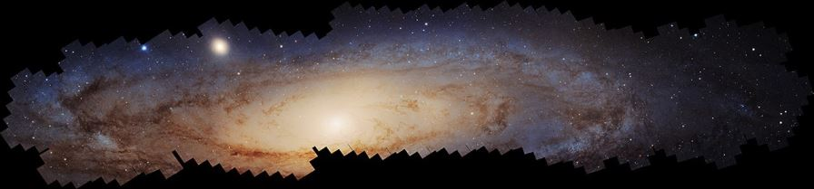
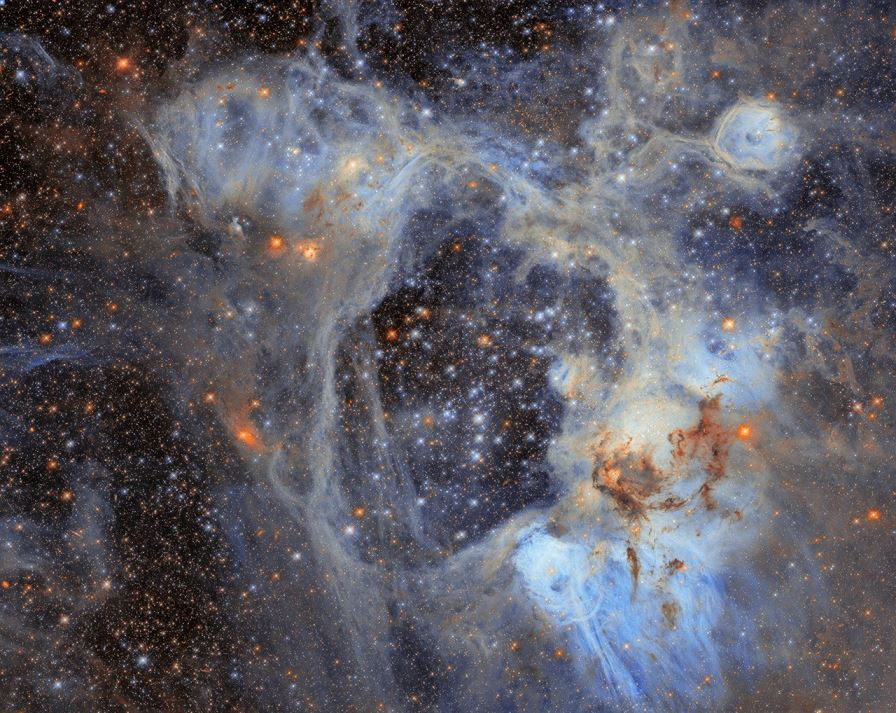
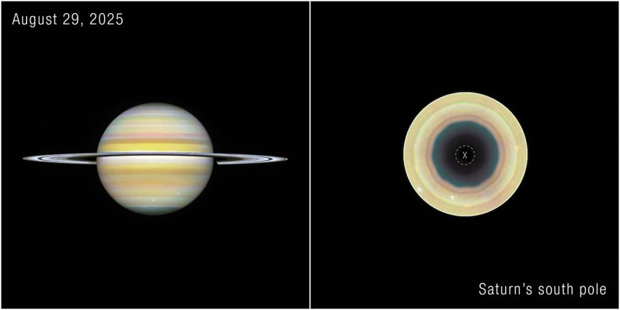
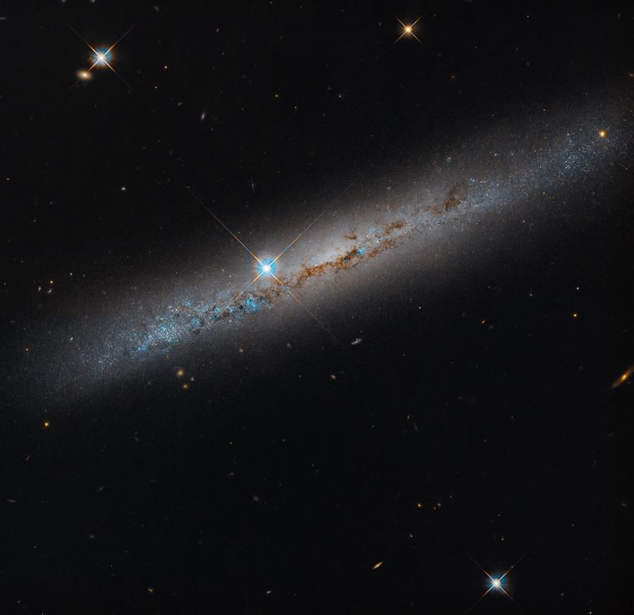
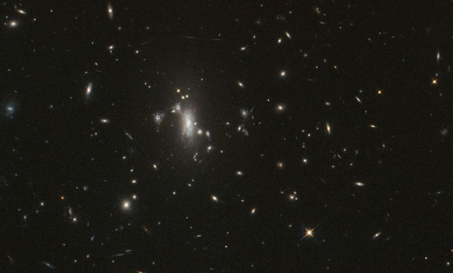

Launched on 24 April 1990 aboard Space Shuttle Discovery, Hubble is the most productive scientific instrument ever built. It began life half-blind — and became proof that a machine in space can be fixed, upgraded, and loved by astronauts for three decades.
The machine
| Specification | Value |
|---|---|
| Size | 13.2 m long × 4.2 m diameter — about a school bus |
| Mass | 12,200 kg today (11,100 kg at launch) |
| Mirror | 2.4 m primary, f/24, UV to near-infrared |
| Orbit | ~480 km altitude, 28.5° inclination, one lap every 94–95 minutes at 17,000 mph |
| Power | Solar panels generate >5,200 W; about 2,100 W used |
| Data | ~150 GB per week, downlinked at 1 Mbps |
| Active instruments | WFC3 (wide-field imaging), ACS (high-resolution imaging), COS (UV spectroscopy), STIS (UV/visible spectroscopy) |
| Cost | ~$16 billion through servicing (2021 dollars) |
The 2-micrometre mistake — and the fix
When Hubble's first images came back in 1990, they were blurred. The 2.4-metre mirror had been polished to perfection — but to the wrong shape: its edge was too flat by about 2 micrometres, one-fiftieth the thickness of a human hair. The telescope became a joke on late-night television.
Then came one of the most audacious repairs in engineering history. In December 1993, astronauts on Servicing Mission 1 (Shuttle Endeavour) installed COSTAR — a set of small corrective mirrors, essentially glasses for the telescope — plus a new camera. The blur vanished, and Hubble began producing the images it had been built for.
Five repair missions
| Mission | Shuttle | Date | What it did |
|---|---|---|---|
| SM1 | Endeavour | Dec 1993 | COSTAR + WFPC2: fixed the blur |
| SM2 | Discovery | Feb 1997 | NICMOS, STIS installed |
| SM3A | Discovery | Dec 1999 | All six gyroscopes replaced |
| SM3B | Columbia | Mar 2002 | ACS camera, new solar arrays |
| SM4 | Atlantis | May 2009 | WFC3 + COS; COSTAR finally removed; the last human touch |
What Hubble discovered
- The age of the universe — 13.8 billion years. Before Hubble, estimates ranged from 9.7 to 19.5 billion.
- Dark energy — Hubble's supernova measurements showed in 1998 that cosmic expansion is accelerating, not slowing. The Hubble Key Project measured the expansion rate at 72 ± 8 km/s per megaparsec — and today's "Hubble tension" between local measurements (~73) and the cosmic microwave background (~67–68) is one of the hottest puzzles in physics.
- The Deep Fields — pointing at an "empty" patch of sky for days revealed thousands of galaxies: the Hubble Deep Field (1995), Ultra Deep Field (2003–04) and eXtreme Deep Field (2012).
- Supermassive black holes — Hubble spectroscopy proved they exist and sit at the centres of most galaxies.
- The first exoplanet atmosphere — sodium detected around HD 209458 b, announced 27 November 2001.
- Pluto's moons — Nix and Hydra (2005), Kerberos (2011), Styx (2012) — all found by Hubble.
- Comet Shoemaker-Levy 9 — Hubble watched its fragments strike Jupiter in July 1994.
Hubble today (October 2026)
Still working. Hubble has run on a single gyroscope since 14 June 2024 (after a gyro failure, NASA kept one in reserve and switched to one-gyro pointing, with magnetometers, sun sensors, star trackers and the Fine Guidance Sensors sharing the job). There will be no more servicing missions, and NASA expects science to continue into the next decade; re-entry is not expected before the mid-2030s at the earliest. Its 200,000th orbit came on 19 September 2026 — and right now Hubble is part of the hunt for Athena, a gravitationally lensed supernova expected to reappear in the sky between now and early March 2027.
Latest pictures




